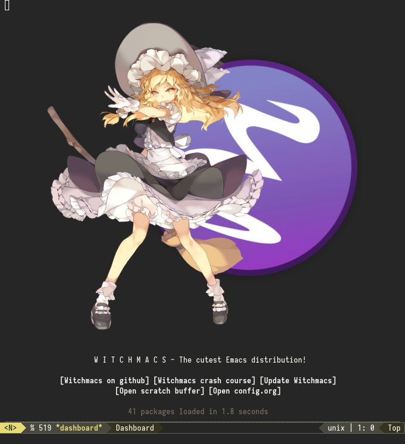

Witchmacs Smoodle
Table of Contents
- QoL section
- Enable line numbers
- Show parent parentheses
- Disable the default startup screen
- Disable most gui elements
- Enable copypasting outside of Emacs
- Disable automatic creation of backup files
- Enable conservative scrolling
- Disable ring-bell
- Indentation
- Enable prettify symbols mode
- Enable bracket pair-matching
- Creating a new window switches your cursor to it
- Transform yes-or-no questions into y-or-n
- Easier resize bindigs
- Highlight current line
- Defer loading most packages for quicker startup times
- Change clock format
- Don't suspend emacs
Orgmode- Eshell
- Macos
- Use-package section
- Initialize
auto-package-update - Initialize
diminish - Initialize
spaceline - Initialize
powerlineand utilize the spaceline theme - Initialize
dashboard - Initialize
which-key - Initialize
swiper - Initialize
evilmode - Initialize
beacon - Initialize
avy - Initialize
switch-window - Initialize
idoandido-vertical - Initialize
async - Initialize
page-break-lines - Initialize
undo-tree - Initialize
treemacs - Initialize
magit - Initialize
projectile - Built-in entry:
eldoc - Built-in entry:
abbrev
- Initialize
- Programming section
The cutest Emacs distribution

QoL section
Minor quality-of-life modifications for a more pleasant Emacs experience
Enable line numbers
Emacs breaks certain modes when it has line-numbers-mode enabled, (like docview or ansi-term) so I utilize the approach of only enabling it on some major modes rather than globally
(add-hook 'prog-mode-hook 'display-line-numbers-mode) (add-hook 'text-mode-hook 'display-line-numbers-mode)
Show parent parentheses
(show-paren-mode 1)
Disable the default startup screen
(setq inhibit-startup-message t)
Disable most gui elements
(tool-bar-mode -1) (menu-bar-mode -1) (scroll-bar-mode -1)
Enable copypasting outside of Emacs
(setq x-select-enable-clipboard t)
Disable automatic creation of backup files
(setq make-backup-files nil) (setq auto-save-default nil)
Enable conservative scrolling
(setq scroll-conservatively 100)
Disable ring-bell
(setq ring-bell-function 'ignore)
Indentation
(setq-default tab-width 4) (setq-default standard-indent 4) (setq c-basic-offset tab-width) ;;(setq-default electric-indent-inhibit t) (setq-default indent-tabs-mode t) (setq backward-delete-char-untabify-method 'nil)
Enable prettify symbols mode
(global-prettify-symbols-mode t)
Enable bracket pair-matching
;;(setq electric-pair-pairs '( ;; (?\{ . ?\}) ;; (?\( . ?\)) ;; (?\[ . ?\]) ;; (?\" . ?\") ;; )) ;;(electric-pair-mode t)
Creating a new window switches your cursor to it
(defun split-and-follow-horizontally () (interactive) (split-window-below) (balance-windows) (other-window 1)) (global-set-key (kbd "C-x 2") 'split-and-follow-horizontally) (defun split-and-follow-vertically () (interactive) (split-window-right) (balance-windows) (other-window 1)) (global-set-key (kbd "C-x 3") 'split-and-follow-vertically)
Transform yes-or-no questions into y-or-n
(defalias 'yes-or-no-p 'y-or-n-p)
Easier resize bindigs
Super - Control - <arrow>
(global-set-key (kbd "s-C-<left>") 'shrink-window-horizontally) (global-set-key (kbd "s-C-<right>") 'enlarge-window-horizontally) (global-set-key (kbd "s-C-<down>") 'shrink-window) (global-set-key (kbd "s-C-<up>") 'enlarge-window)
Highlight current line
(global-hl-line-mode t)
Defer loading most packages for quicker startup times
(setq use-package-always-defer t)
Change clock format
(setq display-time-24hr-format t) (setq display-time-format "%H:%M - %d %B %Y") (display-time-mode 1)
Don't suspend emacs
(global-unset-key (kbd "C-z"))
Org mode
Description
One of the main selling points of Emacs! no Emacs distribution is complete without sensible and well-defined org-mode defaults
Code
(use-package org :config (add-hook 'org-mode-hook 'org-indent-mode) (add-hook 'org-mode-hook '(lambda () (visual-line-mode 1)))) (use-package org-indent :diminish org-indent-mode) (use-package htmlize :ensure t) (use-package org-bullets :ensure t :init (add-hook 'org-mode-hook (lambda () (org-bullets-mode))))
Eshell
Why Eshell?
We are using Emacs, so we might as well implement as many tools from our workflow into it as possible
Caveats
Eshell cannot handle ncurses programs and in certain interpreters (Python, GHCi) selecting previous commands does not work (for now). I recommend using eshell for light cli work, and using your external terminal emulator of choice for heavier tasks
Prompt
(setq eshell-prompt-regexp "^[^αλ\n]*[αλ] ") (setq eshell-prompt-function (lambda nil (concat (if (string= (eshell/pwd) (getenv "HOME")) (propertize "~" 'face `(:foreground "#99CCFF")) (replace-regexp-in-string (getenv "HOME") (propertize "~" 'face `(:foreground "#99CCFF")) (propertize (eshell/pwd) 'face `(:foreground "#99CCFF")))) (if (= (user-uid) 0) (propertize " α " 'face `(:foreground "#FF6666")) (propertize " λ " 'face `(:foreground "#A6E22E")))))) (setq eshell-highlight-prompt nil)
Aliases
(defalias 'open 'find-file-other-window) (defalias 'clean 'eshell/clear-scrollback)
Custom functions
Open files as root
(defun eshell/sudo-open (filename) "Open a file as root in Eshell." (let ((qual-filename (if (string-match "^/" filename) filename (concat (expand-file-name (eshell/pwd)) "/" filename)))) (switch-to-buffer (find-file-noselect (concat "/sudo::" qual-filename)))))
Super - Control - RET to open eshell
(defun eshell-other-window () "Create or visit an eshell buffer." (interactive) (if (not (get-buffer "*eshell*")) (progn (split-window-sensibly (selected-window)) (other-window 1) (eshell)) (switch-to-buffer-other-window "*eshell*"))) (global-set-key (kbd "<s-C-return>") 'eshell-other-window)
Macos
Custom settings for macos
Variables
Use mac variable on emacs
(use-package exec-path-from-shell :ensure t :init (when (memq window-system '(mac ns)) (exec-path-from-shell-initialize)))
Settings
Custom variable to macos
(when (eq system-type 'darwin) (setq mac-option-key-is-meta nil mac-command-key-is-meta t mac-command-modifier 'meta mac-option-modifier 'none) (setq ispell-program-name "aspell"))
Use-package section
Initialize auto-package-update
Description
Auto-package-update automatically updates and removes old packages
Code
(use-package auto-package-update :defer nil :ensure t :config (setq auto-package-update-delete-old-versions t) (setq auto-package-update-hide-results t) (auto-package-update-maybe))
Initialize diminish
Description
Diminish hides minor modes to prevent cluttering your mode line
Code
(use-package diminish :ensure t)
Historical
22/04/2019: This macro was provided by user ld43 after I couldn’t figure out how to make diminish work by being at the top of the config file.
;(defmacro diminish-built-in (&rest modes) ; "Accepts a list MODES of built-in emacs modes and generates `with-eval-after-load` diminish forms based on the file implementing the mode functionality for each mode." ; (declare (indent defun)) ; (let* ((get-file-names (lambda (pkg) (file-name-base (symbol-file pkg)))) ; (diminish-files (mapcar get-file-names modes)) ; (zip-diminish (-zip modes diminish-files))) ; `(progn ; ,@(cl-loop for (mode . file) in zip-diminish ; collect `(with-eval-after-load ,file ; (diminish (quote ,mode))))))) ; This bit goes in init.el ;(diminish-built-in ; beacon-mode ; which-key-mode ; page-break-lines-mode ; undo-tree-mode ; eldoc-mode ; abbrev-mode ; irony-mode ; company-mode ; meghanada-mode)
27/05/2019: Since the diminish functionality was always built-in in use-package, there was never a point in using a diminish config. lol silly me
Initialize spaceline
Description
I tried spaceline and didn't like it. What I did like was its theme
Code
(use-package spaceline :ensure t)
Initialize powerline and utilize the spaceline theme
Description
I prefer powerline over spaceline, but the default powerline themes don't work for me for whatever reason, so I use the spaceline theme
Code
(use-package powerline :ensure t :init (spaceline-spacemacs-theme) :hook ('after-init-hook) . 'powerline-reset)
Initialize dashboard
Description
The frontend of Witchmacs; without this there'd be no Marisa in your Emacs startup screen
Code
(use-package dashboard :ensure t :defer nil :preface (defun update-config () "Update Witchmacs to the latest version." (interactive) (let ((dir (expand-file-name user-emacs-directory))) (if (file-exists-p dir) (progn (message "Witchmacs is updating!") (cd dir) (shell-command "git pull") (message "Update finished. Switch to the messages buffer to see changes and then restart Emacs")) (message "\"%s\" doesn't exist." dir)))) (defun create-scratch-buffer () "Create a scratch buffer" (interactive) (switch-to-buffer (get-buffer-create "*scratch*")) (lisp-interaction-mode)) :config (dashboard-setup-startup-hook) (setq dashboard-items '((recents . 5))) (setq dashboard-banner-logo-title "W I T C H M A C S - The cutest Emacs distribution!") (setq dashboard-startup-banner "~/.emacs.d/marivector.png") (setq dashboard-center-content t) (setq dashboard-show-shortcuts nil) (setq dashboard-set-init-info t) (setq dashboard-init-info (format "%d packages loaded in %s" (length package-activated-list) (emacs-init-time))) (setq dashboard-set-footer nil) (setq dashboard-set-navigator t) (setq dashboard-navigator-buttons `(;; line1 ((,nil "Github" "Github page on your browser" (lambda (&rest _) (browse-url "https://github.com/smoodle/")) 'default) (nil "Update Emacs" "Get the latest version" (lambda (&rest _) (update-config)) 'default) ) ;; line 2 ((,nil "Open scratch buffer" "Switch to the scratch buffer" (lambda (&rest _) (create-scratch-buffer)) 'default) (nil "Open config.org" "Open Emacs configuration file for easy editing" (lambda (&rest _) (find-file "~/.emacs.d/config.org")) 'default)))))
Notes
If you pay close attention to the code in dashboard, you'll notice that it uses custom functions defined under the :preface use-package block. I wrote all of those functions by looking at other people's Emacs distributions (Mainly Centaur Emacs) and then experimenting and adapting them to Witchmacs. If you dig around, you'll find the same things I did - maybe even more!
Historical
22/05/19: On this day, the main maintainers of the dashboard package have added built-in fuinctionality to display init and package load time, thing that I already had implemented much earlier on my own. I have left here my implementation for historical purposes
;(insert (concat ; (propertize (format "%d packages loaded in %s" ; (length package-activated-list) (emacs-init-time)) ; 'face 'font-lock-comment-face))) ; ;(dashboard-center-line)
Initialize which-key
Description
Incredibly useful package; if you are in the middle of a command and don't know what to type next, just wait a second and you'll get a nice buffer with all possible completions
Code
(use-package which-key :ensure t :diminish which-key-mode :init (which-key-mode))
Initialize swiper
Description
When doing C-s to search, you get this very nice and neat mini-buffer that you can traverse with the arrow keys (or C-n and C-p) and then press <RET> to select where you want to go
Code
(use-package swiper :ensure t :bind ("C-s" . 'swiper))
Initialize evil mode
Description
Vim keybindings in Emacs. Please note that Witchmacs has NO other evil-mode compatibility packages because I like to KISS. This might change in the future
Code
(use-package evil :ensure t :defer nil :init (setq evil-want-keybinding nil) (setq evil-want-C-u-scroll t) :config (evil-mode 1)) ;(use-package evil-collection ; :after evil ; :ensure t ; :config ; (evil-collection-init))
Initialize beacon
Description
You might find beacon an unnecesary package but I find it very neat. It briefly highlights the cursor position when switching to a new window or buffer
Code
(use-package beacon :ensure t :diminish beacon-mode :init (beacon-mode 1))
Initialize avy
Description
Avy is a very useful package; instead of having to move your cursor to a line that is very far away, just do M - s and type the character that you want to move to
Code
(use-package avy :ensure t :bind ("M-s" . avy-goto-char))
Initialize switch-window
Description
Switch window is a neat package because instead of having to painstakingly do C - x o until you're in the window you want to edit, you can just do C - x o and pick the one you want to move to according to the letter it is assigned to
Code
(use-package switch-window :ensure t :config (setq switch-window-input-style 'minibuffer) (setq switch-window-increase 4) (setq switch-window-threshold 2) (setq switch-window-shortcut-style 'qwerty) (setq switch-window-qwerty-shortcuts '("a" "s" "d" "f" "j" "k" "l")) :bind ([remap other-window] . switch-window))
Initialize ido and ido-vertical
Description
For the longest time I used the default way of switching and killing buffers in Emacs. Same for finding files. Ido-mode made these three tasks IMMENSELY easier and more intuitive. Please not that I still use the default way M - x works because I believe all you really need for it is which-key
Code
(use-package ido :init (ido-mode 1) :config (setq ido-enable-flex-matching nil) (setq ido-create-new-buffer 'always) (setq ido-everywhere t)) (use-package ido-vertical-mode :ensure t :init (ido-vertical-mode 1)) ; This enables arrow keys to select while in ido mode. If you want to ; instead use the default Emacs keybindings, change it to ; "'C-n-and-C-p-only" (setq ido-vertical-define-keys 'C-n-C-p-up-and-down)
Initialize async
Description
Utilize asynchronous processes whenever possible
Code
(use-package async :ensure t :init (dired-async-mode 1))
Initialize page-break-lines
Code
(use-package page-break-lines :ensure t :diminish (page-break-lines-mode visual-line-mode))
Initialize undo-tree
Code
(use-package undo-tree :ensure t :diminish undo-tree-mode)
Initialize treemacs
Description
Neat side-bar file and project explorer
Code
(use-package treemacs :ensure t :defer t :init (with-eval-after-load 'winum (define-key winum-keymap (kbd "M-0") #'treemacs-select-window)) :config (progn (setq treemacs-collapse-dirs (if (executable-find "python3") 3 0) treemacs-deferred-git-apply-delay 0.5 treemacs-display-in-side-window t treemacs-eldoc-display t treemacs-file-event-delay 5000 treemacs-file-follow-delay 0.2 treemacs-follow-after-init t treemacs-git-command-pipe "" treemacs-goto-tag-strategy 'refetch-index treemacs-indentation 2 treemacs-indentation-string " " treemacs-is-never-other-window nil treemacs-max-git-entries 5000 treemacs-missing-project-action 'ask treemacs-no-png-images nil treemacs-no-delete-other-windows t treemacs-project-follow-cleanup nil treemacs-persist-file (expand-file-name ".cache/treemacs-persist" user-emacs-directory) treemacs-recenter-distance 0.1 treemacs-recenter-after-file-follow nil treemacs-recenter-after-tag-follow nil treemacs-recenter-after-project-jump 'always treemacs-recenter-after-project-expand 'on-distance treemacs-show-cursor nil treemacs-show-hidden-files t treemacs-silent-filewatch nil treemacs-silent-refresh nil treemacs-sorting 'alphabetic-desc treemacs-space-between-root-nodes t treemacs-tag-follow-cleanup t treemacs-tag-follow-delay 1.5 treemacs-width 30) (treemacs-resize-icons 11) (treemacs-follow-mode t) (treemacs-filewatch-mode t) (treemacs-fringe-indicator-mode t) (pcase (cons (not (null (executable-find "git"))) (not (null (executable-find "python3")))) (`(t . t) (treemacs-git-mode 'deferred)) (`(t . _) (treemacs-git-mode 'simple)))) :bind (:map global-map ("M-0" . treemacs-select-window) ("C-x t 1" . treemacs-delete-other-windows) ("C-x t t" . treemacs) ("C-x t B" . treemacs-bookmark) ("C-x t C-t" . treemacs-find-file) ("C-x t M-t" . treemacs-find-tag))) (use-package treemacs-evil :after treemacs evil :ensure t) (use-package treemacs-icons-dired :after treemacs dired :ensure t :config (treemacs-icons-dired-mode))
Initialize magit
Description
Git porcelain for Emacs
Code
(use-package magit :ensure t)
Initialize projectile
Description
Projectile makes it easier to browse on github projects
Code
(use-package projectile :ensure t :diminish projectile-mode :bind ("C-c p" . projectile-command-map) :init (projectile-mode 1))
Built-in entry: eldoc
Code
(use-package eldoc :diminish eldoc-mode)
Built-in entry: abbrev
Code
(use-package abbrev :diminish abbrev-mode)
Programming section
Initialize company
Description
Company is the autocompletion frontend that takes all the backends and gives you possible autocompletions when writing programs
Code
(use-package company :ensure t :diminish (meghanada-mode company-mode irony-mode) :config (setq company-idle-delay 0) (setq company-minimum-prefix-length 3) (define-key company-active-map (kbd "M-n") nil) (define-key company-active-map (kbd "M-p") nil) (define-key company-active-map (kbd "C-n") #'company-select-next) (define-key company-active-map (kbd "C-p") #'company-select-previous) (define-key company-active-map (kbd "SPC") #'company-abort) :hook ((js-mode c-mode c++-mode) . company-mode))
Initialize yasnippet
Description
Yasnippet provides useful snippets, nothing to do with Company but still useful when used in conjuction with it
Code
(use-package yasnippet :ensure t :diminish yas-minor-mode :hook ((c-mode c++-mode) . yas-minor-mode) :config (yas-reload-all)) (use-package yasnippet-snippets :ensure t)
Initialize lsp
Description
Language Server protocol for emacs
Code
(use-package lsp-mode :ensure t :hook (js-mode . lsp) :commands lsp ) ;;(use-package lsp-ui :ensure t :commands lsp-ui-mode) (use-package company-lsp :ensure t :commands company-lsp :config (require 'company-lsp) (push 'company-lsp company-backends) ) ;;(Use-package helm-lsp :ensure t :commands helm-lsp-workspace-symbol) ;;(use-package lsp-treemacs :ensure t :commands lsp-treemacs-errors-list)
Java
Description
I use meghanada to provide very neat autocompletion when editing Java files. I use it mainly for autocompletion but there's a ton of other things it can do, automatic imports, for example.
Code
(use-package meghanada :ensure t :defer nil :config (add-hook 'java-mode-hook (lambda () (meghanada-mode t))) (setq meghanada-java-path "java") (setq meghanada-maven-path "mvn"))